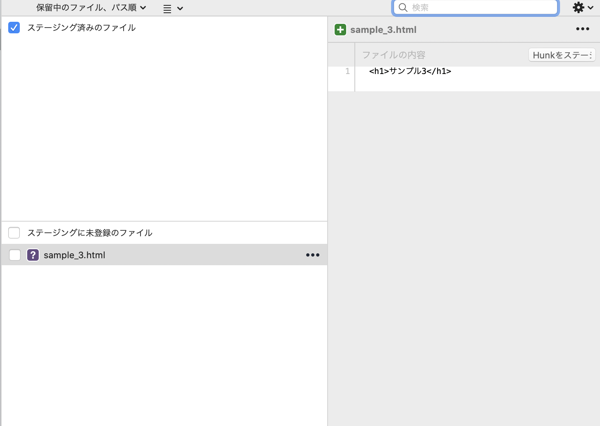
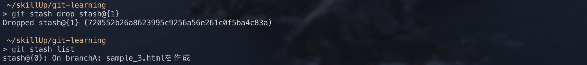

git stash
git stashは編集中のファイルを一時的に保存したい場合に、便利なコマンドです。
【使い方】
①現在編集中のファイルを一時的に保存します。
sample_3.htmlを作成し、ステージにgit stash save -u
git stash saveで保存できますが、この場合untracked fileは保存できないため、untracked fileも一時保存したい場合はgit stash save -uとします。
②stash saveしたものは、git stash listで確認できます。
※今回の場合、最後のコミットメッセージがコメントとして表示されています。
③一時退避させたものを復元したい場合は、git stash apply stash@{番号}
を実行します。番号はgit stash listで確認できます。

最後のコミットメッセージがコメントとして表示されても、どのような変更を行っていたか分かりづらいため、独自にコメントをつけることが可能です。
その場合、git stash save (-u) コメントとします。
過去のstashが不要となった場合は、git stash drop stash@{番号}で削除することができます。
※全てのstashを削除したい場合は、git stash clearです。
